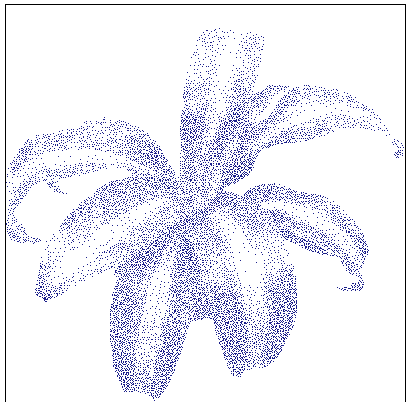
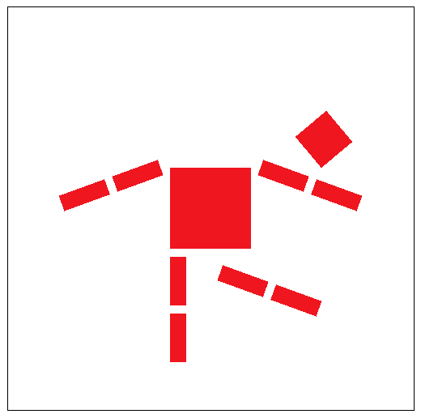
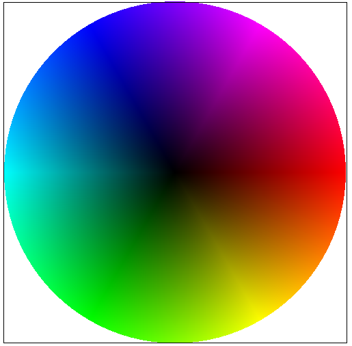
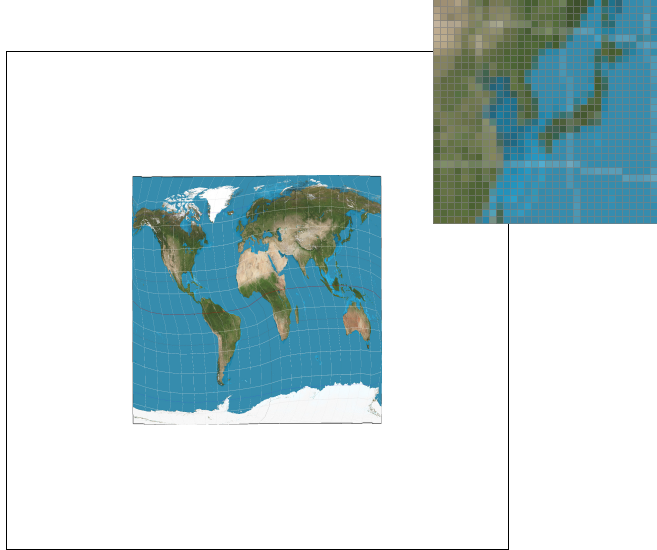
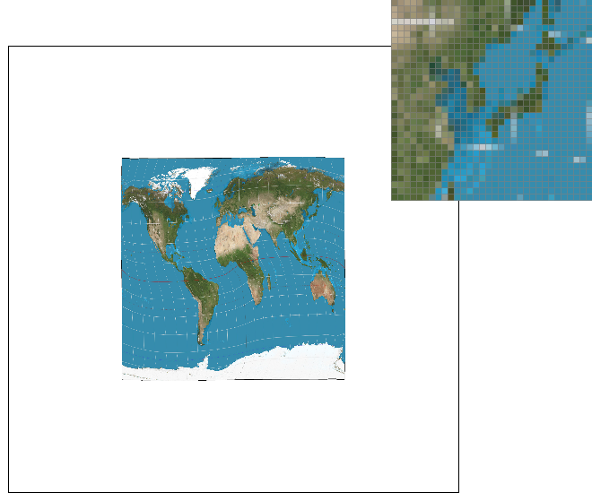
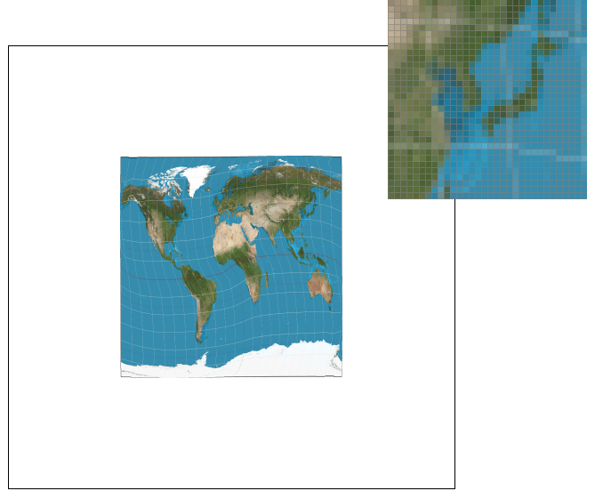

The goal of the project is to explore the steps involved in building a 2D rasterizer: a method of converting vector-based
geometry into discrete pixel images.
I implement methods using C++ to create an OpenGL framework graphics pipeline,
beginning with simply filling single colored triangles without supersampling.
Next I explore how design choices in sampling and filtering directly affect the image quality by introducing antialiasing by supersampling.
I build on transformations, barycentric coordinates, and apply my pixel sampling technique
to texture mapping.
I finally demonstrate how mipmaps provide prefiltered levels to improve and add life to my renders.
Compared to brute-force supersampling for textures, mipmaps are typically a more cost-effective way to reduce texture aliasing
while keeping renders stable and visually convincing.
Build / Run Notes
During the assignment I use the Visual Studio IDE with Windows 11 to build the project
and allow for clean seamless workflow as well as debugging practices.
The project contains several .cpp files that
include classes with defined functions for each task.
Each task's functionality is tested and run using draw.exe and the launch test
is specified in the launch.json file where I configure the desired test to be run with my argument.
I start with test 1,
my first render of a flower.
draw ../../../svg/basic/test1.svg

Figure 1. Baseline run of draw on a provided SVG test scene.
Task 1: Drawing Single-Color Triangles
Approach
My first task is to convert a triangle given by three vertex positions
\( (x_0, y_0), (x_1, y_1), (x_2, y_2) \)
into a filled set of colored pixels in the framebuffer.
I do so by restricting work to an
axis-aligned bounding box around the triangle and then using a point-in-triangle test to decide
whether each pixel sample lies inside the triangle.
I compute the bounding box by taking the minimum and maximum \(x\) and \(y\) coordinates across the
three vertices, using floor and ceiling so that the bounds cover all potentially affected pixels:
\[
x_{\min} = \left\lfloor \min(x_0, x_1, x_2) \right\rfloor,\quad
x_{\max} = \left\lceil \max(x_0, x_1, x_2) \right\rceil,
\]
\[
y_{\min} = \left\lfloor \min(y_0, y_1, y_2) \right\rfloor,\quad
y_{\max} = \left\lceil \max(y_0, y_1, y_2) \right\rceil.
\]
I then iterate over integer pixel coordinates \((x,y)\) in this box and sample at pixel centers:
\( p_x = x + 0.5 \) and \( p_y = y + 0.5 \).
To test whether the sample point \(P=(p_x,p_y)\) is inside the triangle, I evaluate an edge function
as a signed 2D cross product for each directed edge \(A\to B\):
\[
E(A,B,P) = (p_x - a_x)(b_y - a_y) - (p_y - a_y)(b_x - a_x).
\]
I compute this for the three edges \((v_0\!\to\!v_1), (v_1\!\to\!v_2), (v_2\!\to\!v_0)\).
The sign pattern of these values depends on the winding order, so I accept the point if
all three edge values are nonnegative or all three are nonpositive:
\[
(E_{01}\ge 0 \wedge E_{12}\ge 0 \wedge E_{20}\ge 0)\;\; \lor \;\;
(E_{01}\le 0 \wedge E_{12}\le 0 \wedge E_{20}\le 0).
\]
Using \(\ge\) and \(\le\) treats boundary samples as inside, which prevents cracks where triangle edges
might otherwise be skipped.
Finally, for each pixel that passes the test, I write its color with
fill_pixel(x, y, color).
In Task 1 I use one sample per pixel with no supersampling, so
diagonal edges exhibit aliasing in clearly visible jaggies.
The runtime is
proportional to the bounding box area, meaning it is no worse than checking each sample within the bounding box and typically far better than
scanning the entire framebuffer.
Key detail:
I sample at pixel centers, not corners: \(p_x = x + 0.5\), \(p_y = y + 0.5\). This matches the spec and makes the inside-test consistent.
Inside test:
For each candidate pixel-center \(P\), I evaluate a signed edge function as a 2D cross product for the three directed edges.
A point is inside if the three edge values are all \(\ge 0\) or all \(\le 0\), so the result is correct for either winding order clockwise or counterclockwise.
Boundary rule:
I treat samples exactly on an edge as inside by using \(\ge\) and \(\le\). This avoids cracks where shared triangle edges might otherwise leave gaps.
Efficiency:
I iterate only over the axis-aligned bounding box of the triangle, computed from min and max of the vertex coordinates,
so work is proportional to the box area rather than scanning the full framebuffer.
Common bug:
Off-by-one bounding-box bounds, wrong floor or ceiling, or failing to clamp to \([0, \text{width}) \times [0, \text{height})\) can drop edge pixels or cause out-of-bounds writes.
Another classic bug is using a strict \(>\) or \(<\) edge check, which can accidentally exclude boundary pixels.
Observed result:
With one sample per pixel, diagonal edges show aliasing.
Figure 2. test4.svg default view with pixel inspector highlighting aliasing.
Task 2: Antialiasing by Supersampling
Goal
In Task 2 I enhance my sampling pipeline by introducing supersampling, a form of antialiasing that approximates a pixel’s coverage
by taking multiple samples inside each pixel and averaging them.
With only one sample per pixel, typically at the pixel center, thin or diagonal edges
become a harsh hit or miss decision, which produces visible jaggies and broken looking lines.
Supersampling reduces this by allowing edge pixels to take on
intermediate intensities that correspond to partial coverage.
To support this, I introduced a supersample buffer, sample_buffer, a color vector sized
width * height * sample_rate.
Each output pixel (x,y) owns a contiguous block of sample_rate subsamples.
I denote sample_rate as s. I store these subsamples contiguously per pixel using a base index:
\[
\mathrm{base} = (y \cdot \mathrm{width} + x)\cdot \mathrm{s}.
\]
Rasterization writes colors into these subsamples instead of directly into rgb_framebuffer_target.
After all primitives are rasterized, resolve_to_framebuffer computes the final pixel color by averaging the subsamples:
\[
C(x,y) = \frac{1}{\mathrm{s}} \sum_{s=0}^{\mathrm{s}-1} C_s(x,y).
\]
This resolve step converts fractional coverage near edges into smooth transitions.
What changed
The main change in triangle rasterization is that I test multiple subpixel sample points per pixel.
For each triangle, I compute and clamp an
axis-aligned bounding box, then for each pixel in that box I evaluate an inside-triangle test at an \(N\times N\) grid of subsamples, where
\[
N = \sqrt{\mathrm{s}} \quad (\mathrm{s}\in\{1,4,9,16,\dots\}).
\]
Each subsample is taken at the center of its subcell:
\[
p_x = x + \frac{s_x + 0.5}{N}, \qquad
p_y = y + \frac{s_y + 0.5}{N},
\]
where \(s_x,s_y \in \{0,\dots,N-1\}\).
I determine whether \((p_x,p_y)\) lies inside the triangle using an edge function, a signed 2D cross product.
For a directed edge \(A\to B\),
\[
E(A,B,P) = (p_x-a_x)(b_y-a_y) - (p_y-a_y)(b_x-a_x).
\]
Computing this for the three triangle edges gives \(E_{01}, E_{12}, E_{20}\).
A subsample is inside the triangle if all three edge values have the same sign:
\[
(E_{01}\ge 0 \wedge E_{12}\ge 0 \wedge E_{20}\ge 0)\;\; \lor \;\;
(E_{01}\le 0 \wedge E_{12}\le 0 \wedge E_{20}\le 0).
\]
This makes the test correct for either winding order clockwise or counterclockwise.
If the subsample is inside, I write the triangle’s color into the corresponding subsample slot
in sample_buffer.
After rasterization, the resolve step averages the subsamples into a single framebuffer pixel, producing the antialiased result.
Because this pipeline introduces a buffer whose size depends on resolution and sample rate, I also updated runtime behavior:
set_sample_rate updates sample_rate and resizes sample_buffer, and
set_framebuffer_target updates width and height and resizes accordingly.
Finally, clear_buffers resets both the RGB framebuffer and the supersample buffer to white each frame.
In my side-by-side renders of test4.svg at sample rates 1, 4, and 16, the pixel inspector shows the effect directly.
At 1 sample per pixel, edge pixels are mostly fully on or fully off, which produces strong jaggies,
while higher sample rates produce intermediate averaged colors from partial coverage, smoothing thin edges.
The improvement from 1 to 4 is usually the most dramatic, while 4 to 16 shows smaller additional gains
because the coverage estimate is already much better.
Transforms are implemented using 3×3 homogeneous coordinate matrices, so that translation, rotation, and scaling can all be expressed as matrix multiplication.
A 2D point \((x,y)\) is represented as a homogeneous vector \((x,y,1)\), and a transform matrix \(M\) is applied by
\[
\begin{bmatrix}x'\\y'\\1\end{bmatrix}
\;=\;
M\begin{bmatrix}x\\y\\1\end{bmatrix}.
\]
In transforms.cpp I implemented three functions: translate, scale, and rotate.
Translation by \((d_x,d_y)\) uses
\[
T(d_x,d_y)=
\begin{bmatrix}
1 & 0 & d_x\\
0 & 1 & d_y\\
0 & 0 & 1
\end{bmatrix},
\]
which shifts a point by adding \((d_x,d_y)\) to its position.
Scaling by \((s_x,s_y)\) uses
\[
S(s_x,s_y)=
\begin{bmatrix}
s_x & 0 & 0\\
0 & s_y & 0\\
0 & 0 & 1
\end{bmatrix},
\]
which multiplies the \(x\) and \(y\) components by \(s_x\) and \(s_y\).
Rotation by an angle \(\theta\) uses
\[
R(\theta)=
\begin{bmatrix}
\cos\theta & -\sin\theta & 0\\
\sin\theta & \cos\theta & 0\\
0 & 0 & 1
\end{bmatrix}.
\]
The SVG files provide the scene description and a hierarchy of transform commands via the transform attribute, such as translate, rotate, and scale.
When I run draw.exe on an SVG, the starter code parses these transform strings and maps them to my C++ implementations of translate, scale, and rotate
to build matrices that are composed and applied to vertex positions before rasterization.
In robot.svg, the entire robot is positioned first by applying the top-level translation vector \((250,250)\), which centers the model in the 500×500 viewBox:
\[
T(250,250).
\]
Each body part is defined as polygons inside nested group elements, so transforms apply hierarchically to all child geometry.
The head is placed above the torso by translating it upward with the vector \((0,-100)\), then rotating it by \(45^\circ\), then scaling it by \((0.5,0.5)\):
\[
T(0,-100)\;R(45^\circ)\;S(0.5,0.5).
\]
This produces a smaller, rotated head positioned above the torso.
For my creative pose, I edited these group transforms to create a kicking scene.
I displaced the head using a larger translation such as translate(140, -60) and increased its rotation so it appears knocked loose and spinning.
I rotated the right leg after placing it at its hip position using a sequence such as translate(40, 90) rotate(-70) to create a kicking motion.
I also rotated both arm groups slightly downward using small angles of opposite sign so the posture looks more relaxed.
Because transforms are applied to groups, I can reposition entire limbs or the head by changing only a few translation vectors and angles,
without editing any individual polygon vertex coordinates.

Figure 6. Transform hierarchy.
Task 4: Barycentric Coordinates
Concept
Task 4 builds directly on the triangle rasterization pipeline from Tasks 1–2:
I still compute an axis-aligned bounding box
for each triangle, iterate over pixels and subsamples when supersampling is enabled, and use the same inside-triangle test
to decide which sample points lie in the triangle.
The major difference is what I write when a sample point is inside.
Instead of assigning a constant triangle color, I compute a different color at each sample point using barycentric
coordinates, producing a smooth gradient across the triangle’s interior.
Conceptually, barycentric coordinates treat a point
\(P\) inside a triangle as a weighted blend of the triangle’s vertices, where the weights change continuously across the
surface, so interpolated attributes like color change smoothly as well.
Usage
After I determine that a sample point \(P=(p_x,p_y)\) lies inside the triangle with vertices
\(v_0=(x_0,y_0)\), \(v_1=(x_1,y_1)\), and \(v_2=(x_2,y_2)\), I compute barycentric weights \(\alpha,\beta,\gamma\) for \(P\).
These weights satisfy
\[
\alpha+\beta+\gamma = 1,
\qquad
P = \alpha v_0 + \beta v_1 + \gamma v_2.
\]
I compute the coefficients using signed 2D cross products. For vectors
\(a=(a_x,a_y)\) and \(b=(b_x,b_y)\), define
\[
\operatorname{cross}(a,b) = a_x b_y - a_y b_x.
\]
Let \(A=v_0\), \(B=v_1\), and \(C=v_2\). The shared denominator proportional to the triangle’s signed area is
\[
\text{denom} = \operatorname{cross}(B-A,\;C-A).
\]
Then the barycentric coefficients for the sample point \(P\) are
\[
\beta = \frac{\operatorname{cross}(P-A,\;C-A)}{\text{denom}},
\qquad
\gamma = \frac{\operatorname{cross}(B-A,\;P-A)}{\text{denom}},
\qquad
\alpha = 1-\beta-\gamma.
\]
The sign of denom depends on winding order clockwise or counterclockwise; the ratios remain consistent as long as the
same orientation is used for numerator and denominator.
Once \(\alpha,\beta,\gamma\) are computed, I interpolate vertex attributes by taking a weighted sum.
For interpolated color
with vertex colors \(c_0,c_1,c_2\), the sample’s color is
\[
c(P) = \alpha c_0 + c_1 \beta + c_2 \gamma.
\]
If supersampling is enabled, this interpolation is done per subsample and written into the appropriate location in the
supersample buffer; afterward resolve_to_framebuffer averages the subsamples per pixel exactly as in Task 2.
In the test output, the result appears circular, but it is composed of many triangles whose colors are interpolated
independently; the smooth transitions across each wedge confirm barycentric interpolation is working correctly.
Faint seams can appear at triangle boundaries because each triangle interpolates from its own three vertex colors, so the gradient
direction can shift slightly across shared edges.
This same mechanism generalizes to texture mapping:
if each vertex carries UV coordinates \((u_0,v_0)\), \((u_1,v_1)\),
and \((u_2,v_2)\), then for a sample point \(P\) I compute
\[
u(P) = \alpha u_0 + \beta u_1 + \gamma u_2,
\qquad
v(P) = \alpha v_0 + \beta v_1 + \gamma v_2.
\]
The interpolated \((u(P),v(P))\) identifies the texture location to sample, which is the key input to the texture sampling
steps in later tasks.

Figure 7. Barycentric interpolation.
Task 5: Pixel Sampling for Texture Mapping
Nearest vs Bilinear
In Task 5, I implement texture mapping by filling triangles where the color at each pixel sample comes from a texture image instead of a single flat color.
The overall rasterization flow stays the same as Tasks 1–2:
I compute a triangle bounding box, iterate pixels in that box, evaluate an inside-triangle edge test,
and optionally supersample using an N×N grid of subpixel samples per pixel where \(N=\sqrt{s}\) and \(s\) is the sample rate.
In my implementation this assumes perfect-square sample rates, and otherwise falls back to a single sample per pixel.
Each subsample color is written into the supersample buffer at a per-pixel base index, and resolve_to_framebuffer averages the \(s\) samples to produce the final
framebuffer color.
The main difference from Task 4 is what I interpolate once a sample point \(P\) is inside.
I still compute barycentric weights \(\alpha,\beta,\gamma\) relative to triangle vertices \((v_0,v_1,v_2)\), with
\[
\alpha+\beta+\gamma=1.
\]
Instead of interpolating vertex colors directly, I interpolate texture coordinates \((u,v)\) at the sample point:
\[
u(P)=\alpha u_0+\beta u_1+\gamma u_2,\qquad
v(P)=\alpha v_0+\beta v_1+\gamma v_2.
\]
This produces a continuous \(uv(P)\) location inside the texture, which I then convert into a discrete texel color using either nearest-neighbor or bilinear
pixel sampling toggled in the GUI, with pixel sampling toggled via the P hotkey.
Nearest-neighbor sampling maps \(uv(P)\) into texture space and returns the color of the single closest texel.
This preserves sharpness, but it creates abrupt jumps between texels.
Those jumps show up as blocky artifacts under magnification and in high-contrast, high-frequency texture detail such as thin coastline edges.
Bilinear sampling instead looks up the 2×2 texel neighborhood surrounding \(uv(P)\) and linearly blends between them using the fractional offsets in \(x\) and \(y\).
If \((x,y)\) is the continuous texture coordinate in texel space and \((i,j)=(\lfloor x\rfloor,\lfloor y\rfloor)\) with \(t_x=x-i\), \(t_y=y-j\),
then bilinear computes
\[
C(x,y)=(1-t_x)(1-t_y)C_{i,j}+t_x(1-t_y)C_{i+1,j}+(1-t_x)t_yC_{i,j+1}+t_x t_y C_{i+1,j+1},
\]
where \(C_{i,j}\) denotes the texel color at integer texel coordinates \((i,j)\) in the current mip level.
This acts like a simple low-pass filter over the texture footprint inside a pixel, reducing blockiness and making magnified regions look smoother and more stable.
Supersampling and pixel sampling address different sources of aliasing.
Supersampling improves geometric antialiasing by estimating subpixel coverage along triangle edges,
while nearest versus bilinear changes how I reconstruct a color from the texture at a given \(uv\).
In my program I loop over pixels in the triangle’s bounding box, loop over subsamples inside each pixel,
compute \((p_x,p_y)\), run the same edge-function inside test including boundary samples,
compute barycentric weights at \((p_x,p_y)\), interpolate \(uv(P)\), and then call the appropriate texture sampling method
to match the color that gets written into the corresponding slot in the supersample buffer.
In my screenshots comparing nearest and bilinear at 1 and 16 samples per pixel, the pixel inspector highlights that nearest produces sharper but more discontinuous texel steps,
while bilinear reduces those jumps by blending neighboring texels.
The difference is most noticeable on magnified, high-contrast regions of the texture.
Figure 8. Nearest sampling rate 1.

Figure 9. Nearest sampling rate 16.

Figure 10. Bilinear sampling rate 1.

Figure 11. Bilinear sampling rate 16.
Task 6: Level Sampling with Mipmaps for Texture Mapping
Why mipmaps help
Level sampling is a strategy that chooses which resolution of a texture
to sample from.
During minification, a single screen pixel can cover many texels in
texture space.
Sampling only from the base texture at level zero undersamples the
texture, which produces aliasing.
Aliasing shows up as moiré patterns in still images and shimmering in
motion, because high frequency texture detail is being reconstructed
from too few samples.
Mipmaps address this by storing a pyramid of prefiltered textures.
Level zero is the full resolution texture, and each higher level is a
downsampled, low-pass filtered version.
Level sampling chooses a mip level based on the screen pixel footprint
in texture space so that the sampled texture is already filtered to
approximately the correct scale.
Implementation
I implemented level sampling by passing correct sampling information
from the rasterizer to the texture sampler.
In rasterize_textured_triangle, I compute the UV at the
current sample point and also the UV at neighboring screen positions
one pixel away.
I store p_uv at \((p_x,p_y)\),
p_dx_uv at \((p_x+1,p_y)\), and
p_dy_uv at \((p_x,p_y+1)\).
These three UV values are stored in SampleParams and
passed into Texture::sample, which performs both
level selection and pixel filtering.
To choose a mip level, I estimate the footprint of one screen pixel in
texels using derivatives in texel space.
Let w and h be the width and height of mip
level zero.
First I compute texel space differentials:
Δux =
(u(px+1,py) − u(px,py)) · w
Δvx =
(v(px+1,py) − v(px,py)) · h
Δuy =
(u(px,py+1) − u(px,py)) · w
Δvy =
(v(px,py+1) − v(px,py)) · h
Then I compute footprint lengths in texels:
Lx =
√(Δux2 +
Δvx2)
Ly =
√(Δuy2 +
Δvy2)
L = max(Lx, Ly)
The mip level is computed as
level = log2(L).
When level is less than zero, the situation is
magnification and level zero is appropriate.
I implemented Texture::sample to support
L_ZERO, L_NEAREST, and L_LINEAR.
In L_ZERO, sampling always uses mip level 0.
In L_NEAREST, I compute the floating point mip level from
get_level and round to the nearest integer level.
In L_LINEAR, I sample two neighboring mip levels and
linearly interpolate between them to perform trilinear filtering.
In all cases, mip levels are clamped to the valid range from
0 to maxLevel.
Tradeoffs
Each technique trades speed, memory usage, and antialiasing power
differently.
For pixel sampling, P_NEAREST samples a single texel.
It is fast but produces more visible aliasing and blockiness.
P_LINEAR uses bilinear interpolation between four nearby
texels.
It costs more computation but produces smoother results within a mip
level.
For level sampling, L_ZERO always uses the full resolution
texture.
Under minification this keeps high frequency detail that cannot be
properly sampled, which leads to moiré and shimmering.
L_NEAREST chooses a mip level that matches the pixel
footprint and significantly reduces minification aliasing.
L_LINEAR blends between two adjacent mip levels, which
reduces abrupt changes in sharpness during camera motion or zoom.
This reduces popping, which is the sudden visible change that occurs
when the selected mip level jumps discretely from one level to
another.
Supersampling increases the number of samples per screen pixel, which
reduces geometric edge aliasing by averaging multiple coverage samples.
It can also reduce texture aliasing indirectly, but it is more
expensive because it increases shading work and sample buffer storage.
Mipmapping is a targeted and efficient solution for texture
minification.
It requires additional texture memory for the mip pyramid, but it
substantially reduces minification aliasing and often improves
performance by sampling lower resolution textures when appropriate.
Results
For my PNG, I created the texture myself.
I fully modeled and textured the tree in Blender, then produced a
realistic render using the Cycles render engine.
I placed the camera, lit the scene, and sampled the render to generate
the final PNG.
The render contains fine, high frequency detail, which makes aliasing
under minification easy to observe and makes it a strong example for
Task 6.
With L_ZERO, the texture retains high frequency detail
while minified.
Many texels map onto one screen pixel, which produces visible aliasing.
Switching to L_NEAREST effectively prefilters the texture
at the appropriate scale and reduces aliasing and shimmer.
P_NEAREST versus P_LINEAR mostly controls
blockiness versus smoothness within the chosen level.
Pixel filtering alone does not solve minification aliasing without mip
level selection.
Bug encountered and fix
While implementing Task 6, I encountered a bug where incorrect mip
levels produced visible artifacts from my invalid sampling
handling.
The cause was a mismatch between rasterizer.cpp and
texture.cpp in the meaning of p_dx_uv and
p_dy_uv.
The get_level computation expects p_dx_uv and
p_dy_uv to store absolute UV coordinates at neighboring
screen positions so that it can compute derivatives internally by
subtraction.
I initially stored deltas instead of absolute UV coordinates, which
caused an incorrect footprint estimate and invalid mip levels.
I fixed this by storing absolute neighbor UVs in
SampleParams and clamping mip levels in
Texture::sample so extreme minification selects the
maximum valid mip level rather than producing invalid colors.
I also encountered a texel addressing issue in my texture fetch.
My original get_texel indexing did not match the row-major layout of
the texel array, so the sampler read incorrect locations and produced
coherent but incorrect spatial distortions.
I fixed this by using the correct row-major indexing for texels so
that integer texel coordinates map to the expected RGB triplets.